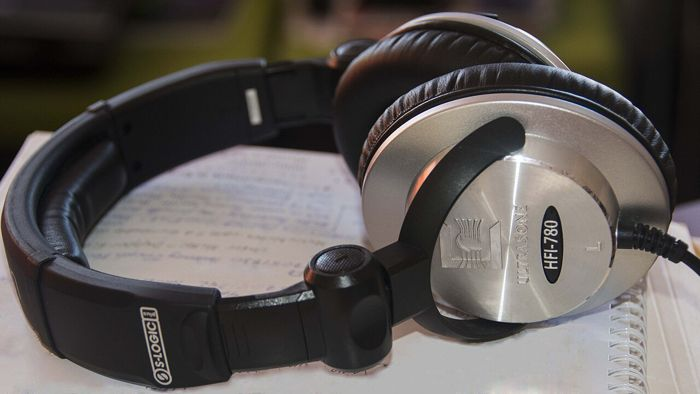

aimeramare, piacereJ'aime beaucoup la musique.ITMi piace molto la musica.J'aime le chocolat = mi piace il cioccolato.ITJ'aime le chocolat = mi piace il cioccolato.
jouergiocare · suonareJe joue du piano tous les jours.ITSuono il pianoforte tutti i giorni.jouer du piano, de la guitare (un instrument) · jouer au tennis, aux cartes (un jeu, un sport)ITjouer du piano = suonare il pianoforte · jouer au tennis = giocare a tennis
écouterascoltareJ'écoute de la musique dans ma chambre.ITAscolto la musica in camera mia.
mangermangiareÀ midi, nous mangeons à la cantine.ITA mezzogiorno mangiamo in mensa.Attention : nous mangeons (avec un e).ITAttenzione: nous mangeons (con una e).